GEMS Proprietary Class: A
Direction 5134798-800, Rev# 1
GEMS Proprietary Class: A |
| Last Revised: | January 25, 2005 |
This module contains information on the following topics:
Section 1 - Using the GEMS HTML Publications
Section 2 - Maximizing Web Browser Viewing Area
Section 3 - HTML Document Tips and Tricks
Section 4 - Embedded PDFs
For information on dtSearch, please refer to:
This section provides general hints for using the GE Medical Systems HTML publications.
The User Interface used by the GEMS HTML publications lists Information categories. Use the mouse to select an Information Category. See Illustration 1.
| NOTE: | The information categories shown in this illustration are standard across GEMS Service publications. Additional categories may be added, as applicable, or categories may be removed, where not applicable. |
Illustration 1: Top Bar Information Categories
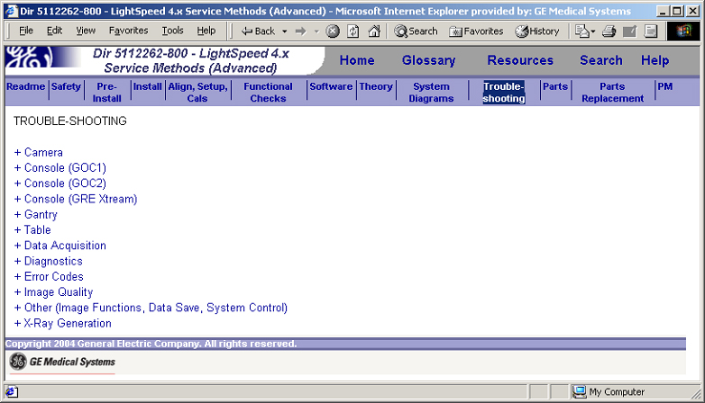
Selecting an information category from the Top Bar will display a list of sub-categories and/or content modules, in the Main Frame of the display (see Illustration 2. ) List items with a plus sign, “+”, next to them are sub-categories. Sub-categories will typically represent sub-systems, functions, or both. List items without a plus sign are Content Modules.
Illustration 2: Sub-Categories
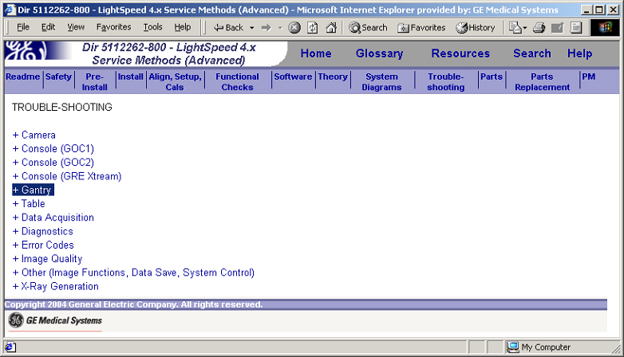
”Click” on a sub-category to expand the menu. See Illustration 3.
Illustration 3: Expanded Menu
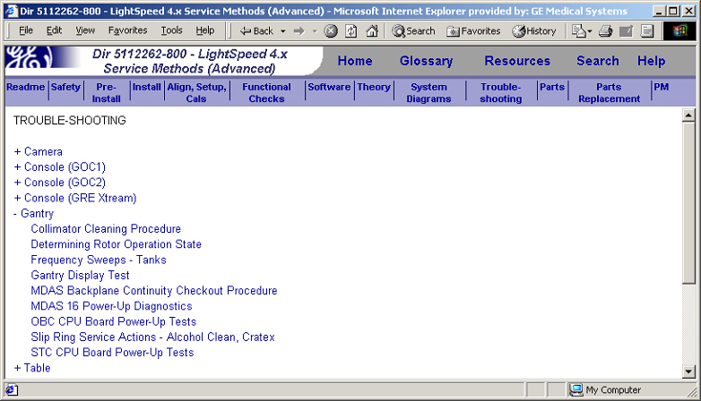
To view a content module, use the mouse to select a module title from the menu. See Illustration 4.
Illustration 4: “Click” on a Module Title
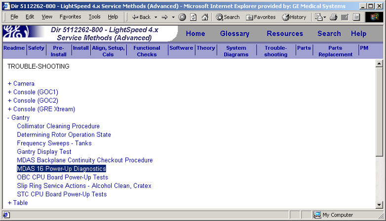
The content module will open in the Main Frame of the open browser window. See Illustration 5.
Illustration 5: Content Module
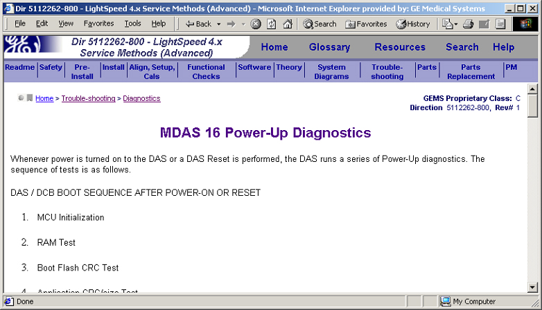
Each module contains a “Bread Crumb Trail” to show the user where they are in the overall publication.
Illustration 6: ”Bread Crumb Trail”
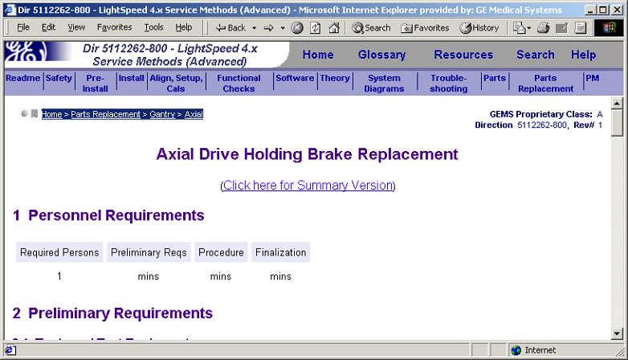
The trail is made of a series of hyperlinks.
| NOTE: | There are two instances in which the bread crumb trail will not
accurately reflect the path followed by the user to a module:
|
When viewing documents in a web browser, it is often desirable to maximize the viewing area. This section explains how to do this, for Microsoft® Internet Explorer, by manipulating the browser's toolbars. The viewing area in other web browsers can be maximized through similar means.
Unused Toolbars consume valuable desktop space. See Illustration 7.
Illustration 7: Unused Toolbars Consume Space
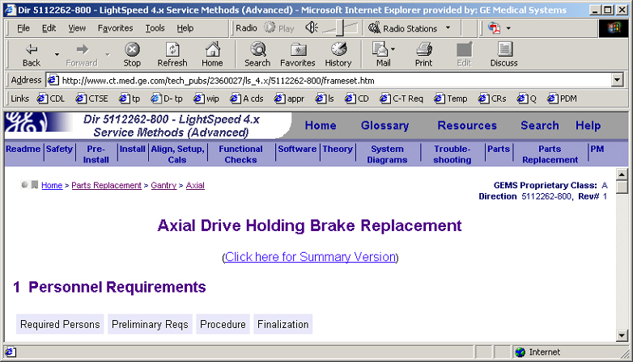
Optimizing the browser's toolbars results in maximum viewing area. See Step .
Illustration 8: Maximized Browser Document Display Area
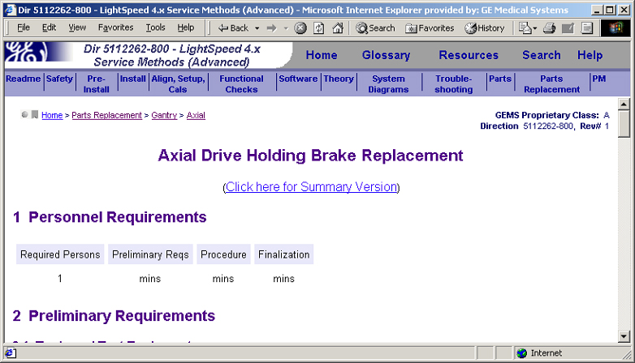
To remove unused or unnecessary toolbars:
From the IE menu, select View→Toolbars.
Select any menu with a checkmark (), to remove it from the browser window.
The size of toolbars that are kept may be reduced through several means:
Reduce the icon size
Use “Selective Text”
Remove unused buttons
Use the Customize Toolbar dialog box to perform these functions. To access this dialog box, select View→Toolbars→Customize, from the IE menu bar.
The Customize Toolbar dialog box is shown in Illustration 9.
Illustration 9: “Customize Toolbar” Dialog Box
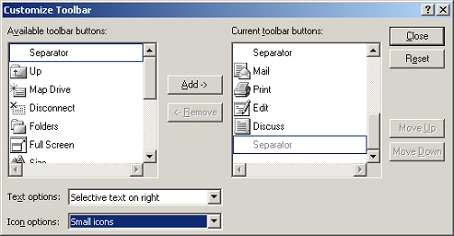
A third way to increase viewing area is to move the toolbars. To move the toolbars, simply use the mouse to drag them to a new location.
Toolbars may be placed side-by-side. If the horizontal space is too small to display all buttons on the toolbar, a down-arrow will appear at the right end of the toolbar. When the mouse is positioned over the arrow, the words “More Buttons” will appear. Simply select the down-arrow to view the “hidden” menu buttons.
Some experimenting may be necessary, to discover the optimal placement of the toolbars.
The following are general tips and tricks that may be used to aid the navigation and use of HTML documents:
Use <alt> + <left-arrow> to go back one screen. This will usually (although not always) function the same as the browser's “back arrow” ().
“Right-click” on a link and choose “Open in New Window” to open the linked module in a separate browser window.
Use “Open in New Window” before attempting to print or save a module.
Use the Save As→Web Archive, single file (*.mht) option to save a self-contained html file (including graphics).
Some content modules contain embedded PDFs. There are two reasons that PDFs are used in GEMS HTML documents:
Separate Directions are linked into the HTML publication. Such PDFs are discrete publications that are:
Available individually through other channels (i.e., independently of the HTML publication)
Revision controlled independently of the HTML publication
Linked into the HTML publication (through content modules) as a convenience to the end user. This creates a “one-stop” publication for service documentation.
PDFs of illustrations are linked into a content module. This is done in the case of illustrations that are too large to fit comfortably on the screen of a standard notebook computer. In many cases, scalable PDFs will be offered via a link found immediately before or immediately after a low resolution version of the graphic in question.
To view a PDF, simply select the PDF icon, to open it in a new browser window.
| NOTE: | The plug-in version of Adobe Reader offers a reduced feature set. Some functions, such as the Adobe Advanced Search, will not operate from the plug-in. To take advantage of Adobe Reader's full feature set, save the PDF to a local drive and then open it directly in the Adobe Reader application (i.e., not in a web browser). |
In addition to JPEGs, GIFFs and PDFs, content modules may contain Scalable Vector Graphics (.svg). SVGs have the advantage over JPGs and GIFs of being scalable, that is, the user may zoom in/out without the image breaking up. The advantage over PDF is that the image may be imbedded directly in the HTML module.
| NOTE: | Your HTML browser must support SVGs, in order to view them. If your browser does not support SVGs, you may download an SVG viewer, from adobe.com. |
There are two ways to view a scalable vector graphic, in an HTML document. Both methods utilize the “Right Click” menu (see Illustration 10).
“Right Click” and choose Zoom In or Zoom Out. The graphic will expand or shrink, within the predefined pane.
“Right Click” and choose View SVG. The graphic will open within a new window.
Illustration 10: SVG “Right Click” Menu
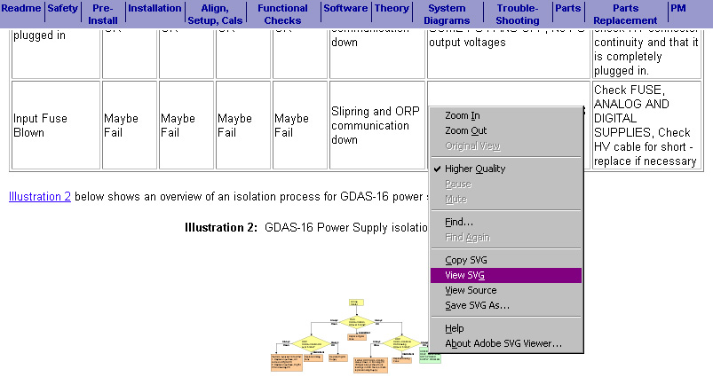
The following is an example of a scalable vector graphic.
Illustration 11: Example SVG
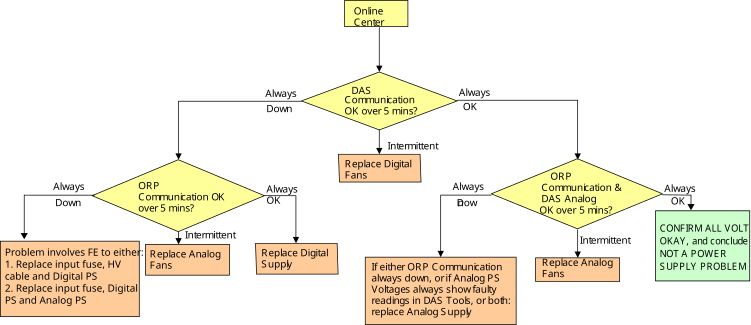
| NOTE: | Due to the small size of the preview pane, it is usually more convenient to use the “View SVG” method, as opposed to simply zooming in and out in the preview pane. |

|